| 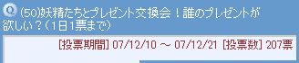 |
| 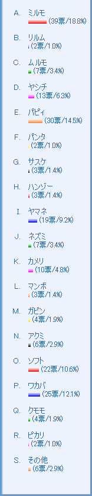 |
|
ミルモ＆パピィ＆ワカバ(1)
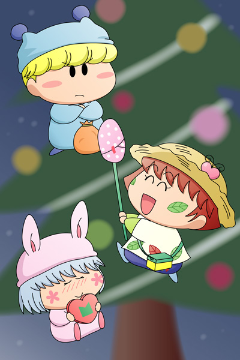
今回は投票50回記念として選択肢を大幅に増やしてみました。上位に選ばれたのは絵に描かれているこの３名。私的にはミルモが１位に選ばれたことがちょっと意外…ミルモはケチだからロクなプレゼントを準備していないですよ(^^;。
絵の方はこの３人が交換用のプレゼントを持ってきたシーンになります。ミルモはアフロ先生変身セット（自分も欲しいので渡すのをためらっている）、パピィは箱に「M」と書かれている謎なプレゼント、ワカバのは見ての通りですね。この３人のプレゼントはいったい誰の手元に行き渡るのか、想像するのも楽しいです。［コメント一覧］(2008/3/8) |
|
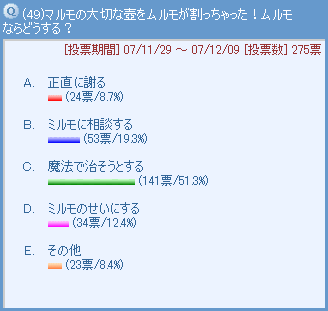 今回のお題はムルモの一大事！時に正直、時にずるがしこいムルモならどの選択肢もあり得るわけですが、自分一人の力で解決しようとする「魔法で治そうとする」に一番票が集まったのがちょっと意外でした。しかし魔法でがんばっても壺は治らないというお約束的展開もあって、この後は他の選択肢に分岐していくのでしょうね。その他のコメントにいただいた「松竹薫に新しい壺を買ってもらう」には思わず「なるほど！」でした。［コメント一覧］
|
ミルモ＆ムルモ(7)
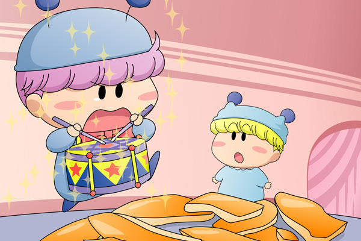
ムルモ「ムルモでポン！ ムルモでポン！ ・・・」
ミルモ「おーいムルモ、何やってんだ？」
ムルモ「ぎくっ、お兄たま・・・な、何でもないでしゅ」
ミルモ「ん？これはオヤジが大切にしていた壺じゃねーか。
ずいぶんと派手に割っちまったなぁ」
ムルモ「きーっ、よりにもよってお兄たまに見られてしまうなんて」
ミルモ「まぁほっとけほっとけ。
どうせオヤジの壺なんてどれもたいしたものじゃないんだしな」
ムルモ「お兄たま・・・」
今日は機嫌が良かったのか、弟ムルモに優しく声をかけてくれた兄ミルモ。しかし割れてしまった壺は元には戻りません。この後ムルモが、正直に自分がやったとマルモに話すのか、ミルモと一緒に破片をどこかに隠すのか、それとも「お兄たまが割ったでしゅ」という極悪展開になるのか・・・それは皆様のご想像にお任せします(^^)。(2008/2/24)
|
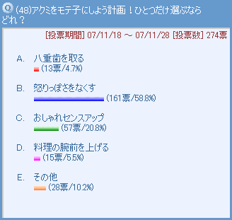 かつてはダアクの手下として恐れられていた(?)アクミですが、それも今は昔の話。今では普通の女の子に戻りましたが、でも黄色アクミはいまいち人気が無いような…。投票結果はと言うと、１１９話「アクミと沙織」の印象が強いからか「怒りっぽさをなくす」が１位となりました。今では沙織と素直な気持ちで接しているといいですね。２位はおしゃれ…というよりも服の色！？今度2Pカラー第2弾として、アクミを登場させてみようかな。［コメント一覧］
|
|
アクミ(3)
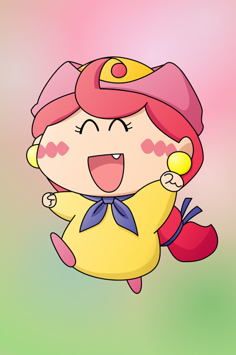
怒りっぽさを無くしたアクミがどうも私にはイメージ出来ないので、代わりに素直で無邪気なアクミを描いてみました。こんな笑顔で男の子たちと遊んだりすると、ペータやマンボあたりがアクミに惚れちゃうかもしれませんね。
でもアクミは人一倍の淋しがり屋でデリケートな性格。この笑顔の奥に淋しさや悲しみが隠れている…なんて複雑な性格の持ち主にはなって欲しくないかも。なので、アクミは気性がはっきりした今の性格のままでも大丈夫と私はアドバイスしてあげたいです。(2008/2/6) |
|
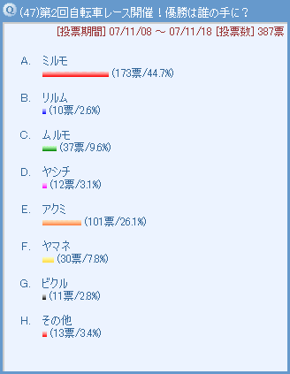 ８３話「激走！荒野の大レース」で行われた妖精学校自転車レースの第２回目が開催されました。今回はアクミも選手として参加、最初はトップを独走してこのまま優勝？と思いきや、ミルモの猛烈なスパートにあっさりかわされてしまいました。見事優勝したミルモにはお菓子デパート１年分無料券が賞品としてプレゼントされた…のかどうかは怪しいところですね。さて今回、選択肢の作成ミスで、前回１位２位のムーンとガビンを入れ忘れてしまいました。なんだかんだでこの２人は堅実に上位に食い込みそうです。［コメント一覧］
|
|
ミルモ＆エンマ(1)
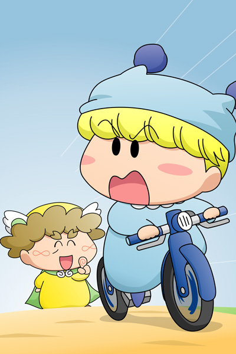
「くっそ〜っ、なかなかアクミに追いつかねぇ・・・！」
「ふぉっふぉっふぉっ、この先には落ちるとスタートに戻される落とし穴をたくさん掘っておいたぞい」
「何だと！え〜い、こうなりゃヤケだ！」
ヤケクソで道のど真ん中を突き進むミルモ。見事エンマ先生の裏をかいたのか、落とし穴に落ちずに見事に１位でフィニッシュというミラクルボーイっぷりを発揮しました。そしてアクミを始め、ほとんどの妖精が落とし穴に何度も落ちてゴール出来ず…。
「ゴール出来なかった妖精は補習授業じゃ！」
(2008/1/26) |
|
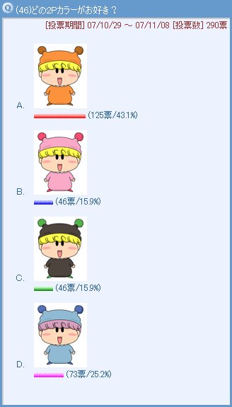 対戦格闘ゲームなどで同じキャラ同士の対戦になると2P側は色違いになる…それを応用して、色違いのミルモをいろいろと用意してみました。あまり差のない結果となり、その中でオレンジ色がまぶしいミルモが最も票を集めました。コメントにもあるように、補色関係にある対照的な色だとがらっとイメージが変わって面白いですね。そして暖色系なのでミルモよりどことなく優しそうなイメージも何となくします。2位は髪の色も含めてムルモ色ミルモ。ムルモの方はこの兄を見て迷惑に思うかもしれませんね(^^;。最後に黒ミルモは皆さんいろんな感じ方をされていて、いろいろなコメントがあって面白いです。［コメント一覧］
|
ミルモ(7)
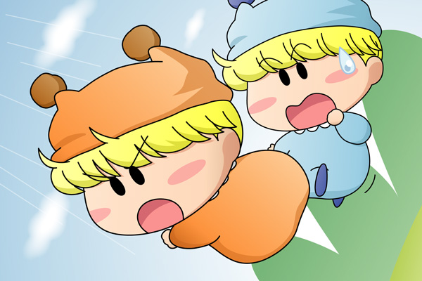
対戦格闘ゲームっぽく、同キャラ同士（ミルモ同士）でケツアタック合戦を繰り広げる光景を描いてみました。2P側の積極的なケツアタックに1Pミルモは大苦戦、もちろんこの後1Pミルモもケツアタックで反撃しますが、ケツアタックのかけ声が連発してうるさそうですね(笑)。2P側が勝ったら「今日からオレ様がミルモだ」とか言いそうです。ちょっとありきたりな絵になってしまったので、コメントにもあるようなハムスターにすれば良かったかな…。(2008/1/21)
|
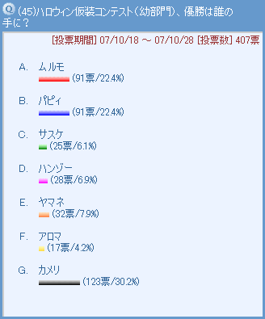 妖精たちがどんな仮装をしているのかは皆さんのご想像にお任せする中で、カメリの仮装が最も票を集めました。普段はあまり派手じゃないカメリだからこそ、ハロウィンの時期になるとみんなをびっくりさせる仮装をしてくれそうです。２位はムルモとパピィが同票という結果が面白いですね。コンテストの表彰式にて悔しそうな表情をしている二人が思い浮かびます。2008年のハロウィンではミルモたちも仮装コンテストに参加させますね。［コメント一覧］
|
カメリ(2)
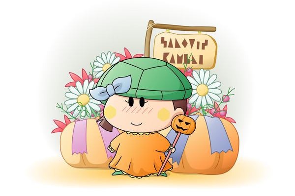
仮装コンテストに出場したカメリの仮装を私なりに描いてみました。私の中ではカメリはカボチャが似合うイメージが強いので、ぜひカボチャ風のファッションを・・・。カボチャのかぶり物などいろいろ悩みましたが、カボチャのイメージを強くするとどうもかわいさに欠けるので、結局シンプルな仮装になってしまいました。代わりに、お花屋さんで売っているようなアレンジメント仕立てにしてかわいさを演出…出来ているといいな。(2008/1/13)
|
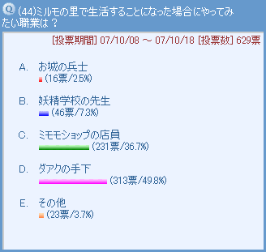 ダアクの手下って職業？とツッコミが入りそうな選択肢がトップに選ばれてしまうなど、今回の投票は反省点が多いですm(_ _)m。ダアクの手下は上下関係が厳しいから、最初はアクミやワルモ団に命令ばかりされてストレスが溜まりそう！？それに対してミモモショップは毎日が楽しそうですね。裏ミモモショップ向けにどんなアイテムがあるか気になります。［コメント一覧］
|
|
ミルモ＆アンリ＆センリ(1)
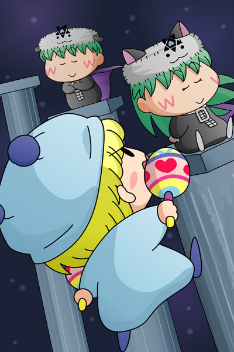
ダアクの手下…いまいちイメージがわかないので、アンリとセンリを手下にしてみました。二人のようなピュアな心の持ち主は簡単に悪に染められてしまいそうなイメージが私の中にあります。双子ならではの連携プレイに、対するミルモもかなり苦戦しそう。黒く染まった二人の心に、ミルモの叫びが果たして届くかどうか…。
とはいっても、この二人を描こうとするとついついかわいく描きたくなるんですよね(^◇^;)。今回の絵も結局いつも通りな二人になってしまいました。なのでミルモに攻撃を仕掛けてくる双子やそのストーリーについては皆さんの頭の中でイメージしてくださいませ〜。(2007/12/28)
|
|
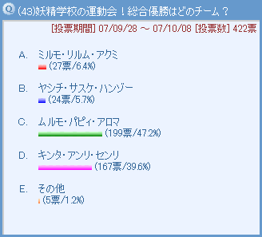 妖精学校の運動会は３人一組で競い合うのが恒例ですが（２８話「がんばれ、ダブル運動会」）、今回は私の方で勝手にチームを考えてみて、優勝チームを募集してみました。何だか結果に大きな開きがあるような…。いえいえ、３人の結束力の強さを考えるとムルモたちの１位は納得！ケンカしそうなムルモ＆パピィの間に入って、癒し役のアロマがいい仕事をしてくれそうです。その他に挙がっているニュース３人娘、結束力の高さにより高い確率で優勝しそう。ワルモ団が３人出るとしたら…３人を選ぶのが難しいなぁ。［コメント一覧］
|
ムルモ＆パピィ＆アロマ(2)
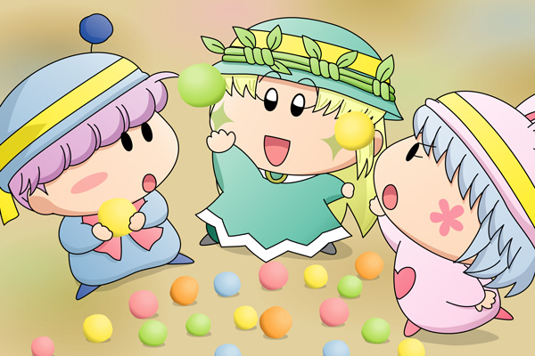
運動会もいよいよ終盤！
各チームそれぞれ『七色くもっちょ入れ』の種目に挑戦です。
アロマ「それっ！」
パピィ「ちゃんと入んなさ〜〜い！」
ムルモ「パピィはもう少し静かに投げたらどうでしゅか？
それに比べてアロマしゃんはおしとやかでしゅし、
パピィよりもたくさんカゴにくもっちょを入れているでしゅ」
パピィ「むかっ！」
パピィの跳び蹴りがバコ〜〜ンとムルモのほっぺに命中！！
ムルモ「何するんでしゅか〜」
パピィ「つべこべ言ってないであんたも真面目にやりなちゃいよ！
まぁ、どんくさいムルモじゃ何度やっても入らないけどね〜」
ムルモ「な、何でしゅって〜〜」
パピィ「何よ！」
アロマ「私ががんばらなくちゃ・・・」
アロマのがんばりのおかげで総合優勝をゲットできた３人。他のチームに目を移してみると・・・くもっちょを全部食べてしまったミルモチームは失格、他のチームへの妨害が見つかったヤシチチームも失格、ルールをうまく理解していないキンタチームは惜しくも２位というすごく低レベルな運動会の可能性が高いです。(2007/12/24)
|
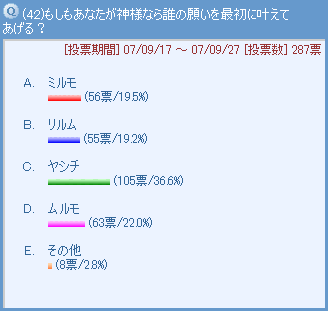 今回の投票は、言い換えると「愛の手を差し延べたいかわいそうなキャラは？」ですね。そんなわけでヤシチが１位に選ばれるのは当然の結果なのかも。安純にこき使われ、オトメに追いかけ回され、ミルモには負けっ放し…とこれほどまでに愛情を捧げたくなる妖精は他にいませんね。２位に選ばれたのはヤシチとは対照的に何一つ不自由していないムルモ。ムルモのぶりっこ作戦によって、神様もすんなり願い事を聞いてしまいそうです。［コメント一覧］
|
ヤシチ＆ピカリ(1)
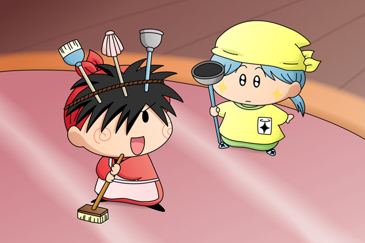
不憫なヤシチのことを思った神様が、ヤシチへ願い事を問いかけました。返ってきた返事は「頼む！大至急掃除の助っ人を呼んで欲しいのだ〜っ」。どうやらヤシチは取り込み中のようで、安純が帰ってくる５分前にヤシチは大あわてで掃除をしていたようです。神様によって呼び寄せられたピカリによって何とか掃除は終わり、トイレ流しの刑を免れたヤシチは些細な幸せを得ることが出来たのでした。
人間界の背景を描いたのは今回初めてかも。取り込み中でなければパンツやかりんとうを願いそうなヤシチですが、毎日を必死に生きるヤシチにとってはそういう余裕はなかなか無さそうです。ヤシチとピカリの組み合わせも初めてですが、掃除コンビとして意外と息が合いそうな予感・・・！？(2007/11/26)
|
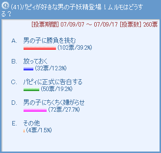 男の子に対してムルモが何らかのアクションを取る選択肢が上位に選ばれました。特に１位の方は兄ミルモ譲りと言えましょうか（リルムが好きなキンタと真剣勝負を行った）。こんな頼もしいムルモをパピィが見たら、パピィは目をハートにしてもっとムルモのことを好きになりそう…そんな意味で二人にいろいろ試練を与えたいです。それとB→D→A→Cというパターンもあったりして。［コメント一覧］
|
ムルモ(8)

ムルモ「ちょっと待てでしゅっ！」
「おや？君は・・・？」
ムルモ「それはこっちのセリフでしゅ。
いきなり現れてパピィと二人で何こそこそしてるんでしゅか！」
「ふーん、君がパピィのことが好きなムルモくんだね。
パピィから聞いたよ」
ムルモ「だ、誰があんなガサツで乱暴なパピィを好きになるもんでしゅか！
そんなことはいいからボクの質問に答えろでしゅ！」
「大丈夫。ボクは君とはライバルにならないから安心して。
だってボクはパピィの親戚なんだから」
ムルモ「ほぇ、親戚？
それならそうと早めに言って欲しいでしゅ」
「・・・今日のことはパピィに言ったらパピィは喜びそうだな」
ムルモ「だ、だめでしゅ！絶対に言わないで欲しいでしゅ！」
突如現れたムルモのライバル。さらさらヘアないい男でパピィと親しげに話すところを目撃したムルモは、二人の関係が気になって仕方がありません。我慢の限界に達したムルモは勝負を挑もうとしましたが、どうやらムルモの早とちりだったようです。
相手の男の子はパピィの親戚ということで、野ウサギなイメージにしてみました。いい名前が思い浮かばなかったので名無しです(^^;。物事をはっきり言う性格はパピィと一緒…という設定になっております。(2007/11/25)
|